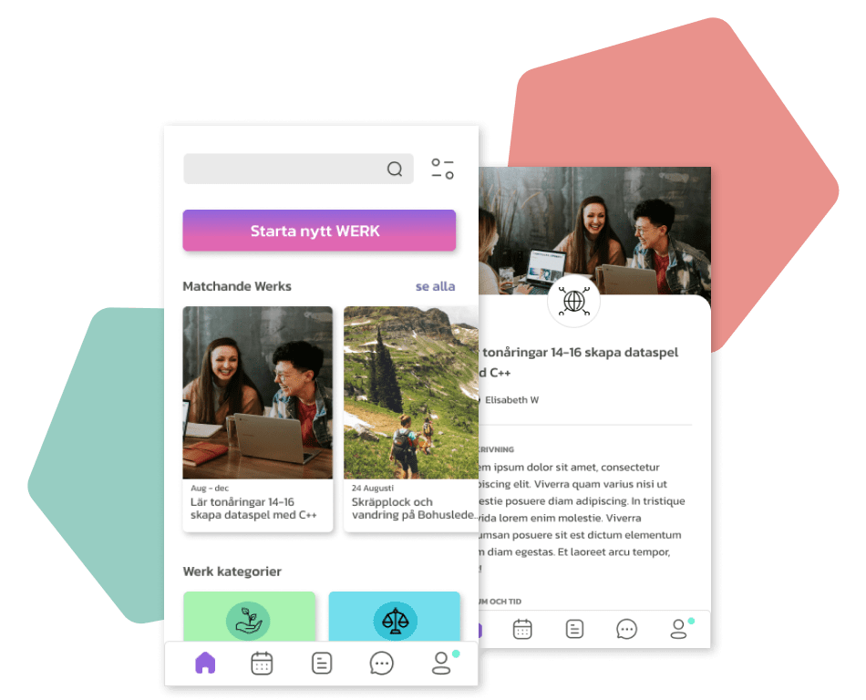

Frontend
Interaktivt fotogalleri
...med JavaScript och jQuery

Projektet
I detta projekt byggde jag ett interaktivt fotogalleri med JavaScript och jQuery.
Överst på sidan finns ett sökområde där foton döljs och visas beroende på användarens inmatning.
När användaren klickar på en miniatyrbild kommer fotot att visas i en lightbox.
Min roll
Jag kodade designen och sökfunktionen utefter en beskrivning.
Testa projektet live
Skriv till exempel "lake" eller "mountain" i sökrutan för att testa.
Gå till fotogallerietDu får gärna kolla på projektets kod också.
Kolla koden på GitHub